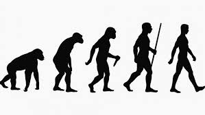
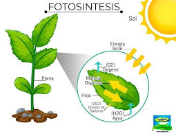
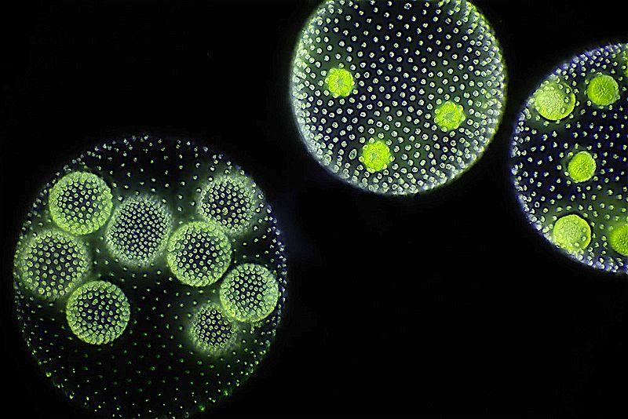

La Tierra (del latín Terra,17 deidad romana equivalente a Gea, diosa griega de la feminidad y la fecundidad) es un planeta del sistema solar que gira alrededor de su estrella —el Sol— en la tercera órbita más interna. Es el más denso y el quinto mayor de los ocho planetas del sistema solar. También es el mayor de los cuatro terrestres o rocosos.
Cronología
Los científicos han podido reconstruir información detallada sobre el pasado de la Tierra. Según estos estudios el material más antiguo del sistema solar se formó hace 4567,2 ± 0,6 millones de años, y en torno a unos 4550 millones de años atrás (con una incertidumbre del 1 %)
se habían formado ya la Tierra y los otros planetas del sistema solar a partir de la nebulosa solar, una masa en forma de disco compuesta del polvo y gas remanente de la formación del Sol. Este proceso de formación de la Tierra a través de la acreción tuvo lugar mayoritariamente en un plazo de 10-20 millones de años.
«Planeta Tierra» redirige aquí. Para la serie documental, véase Planeta Tierra (documental).
La capa exterior del planeta, inicialmente fundida, se enfrió hasta formar una corteza sólida cuando el agua comenzó a acumularse en la atmósfera. La Luna se formó poco antes, hace unos 4530 millones de años.
Evolución de la vida
La Tierra proporciona el único ejemplo conocido de un entorno que ha dado lugar a la evolución de la vida. Se presume que procesos químicos altamente energéticos produjeron una molécula auto-replicante hace alrededor de 4000 millones de años, y hace entre 3500 y 3800 millones de años existió el último antepasado común universal.

El desarrollo de la fotosíntesis permitió que los seres vivos recogiesen de forma directa la energía del Sol; el oxígeno resultante acumulado en la atmósfera formó una capa de ozono (una forma de oxígeno molecular [O3]) en la atmósfera superior. La incorporación de células más pequeñas dentro de las más grandes dio como resultado el desarrollo de las células complejas llamadas eucariotas.

Los verdaderos organismos multicelulares se formaron cuando las células dentro de colonias se hicieron cada vez más especializadas. La vida colonizó la superficie de la Tierra en parte gracias a la absorción de la radiación ultravioleta por parte de la capa de ozono.
